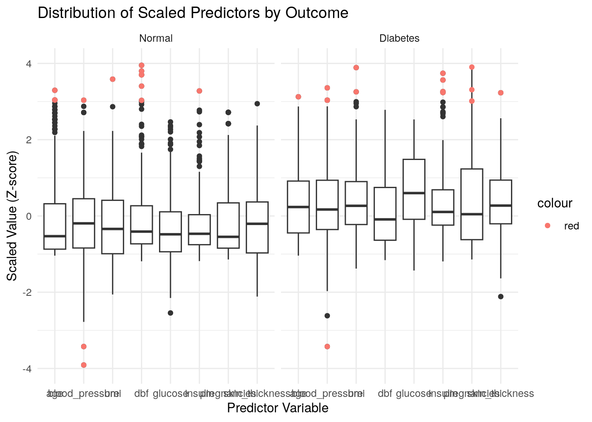
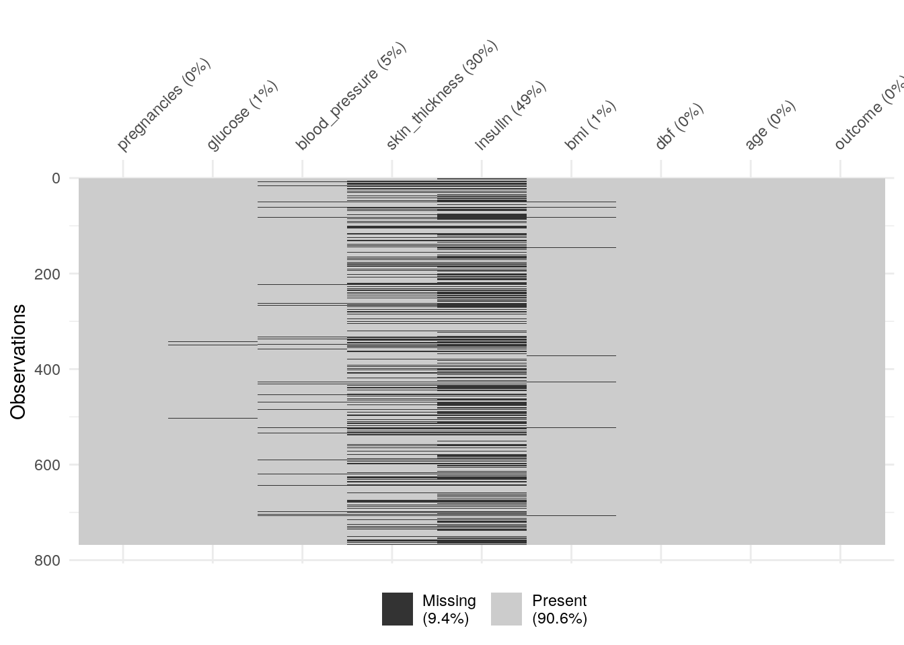
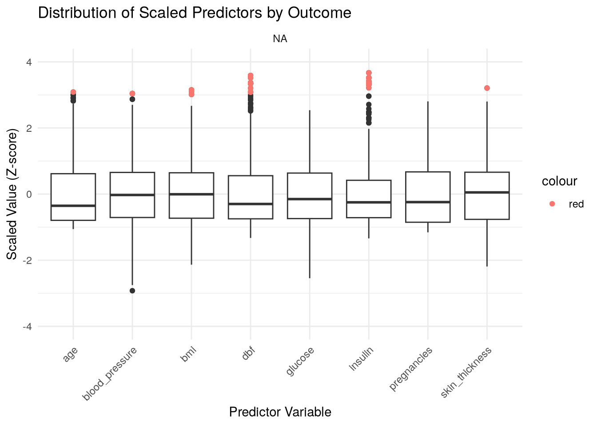
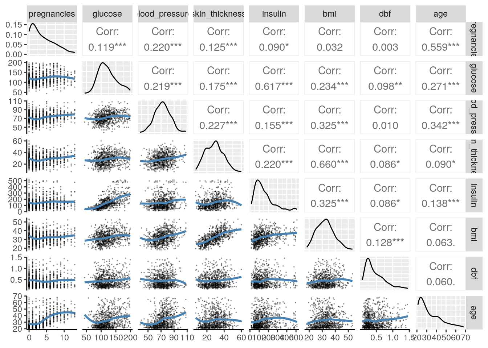
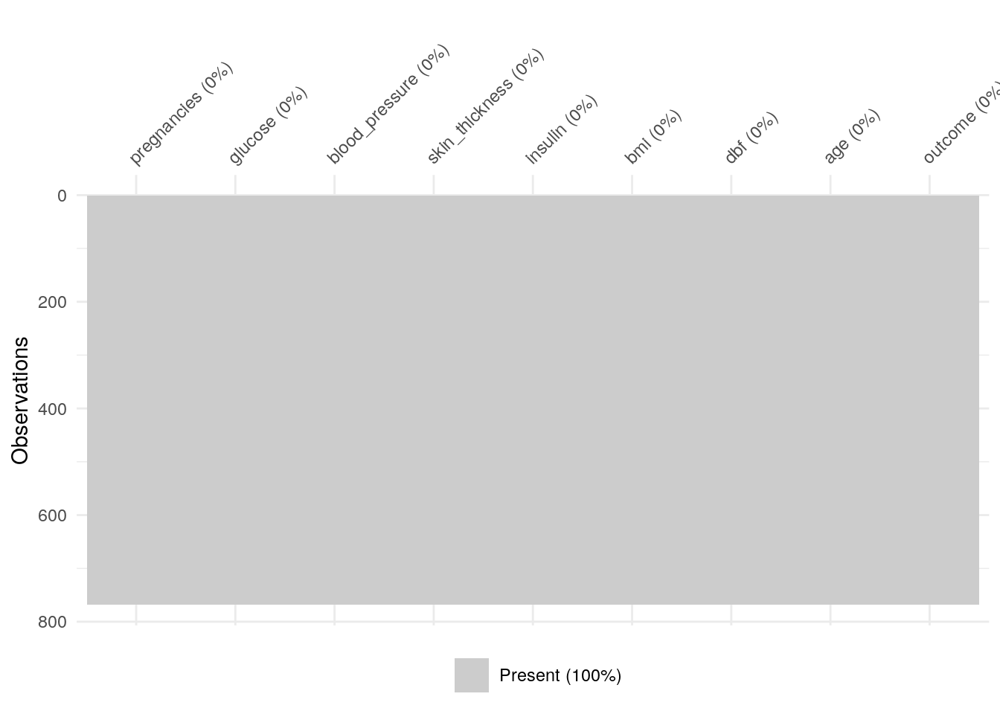
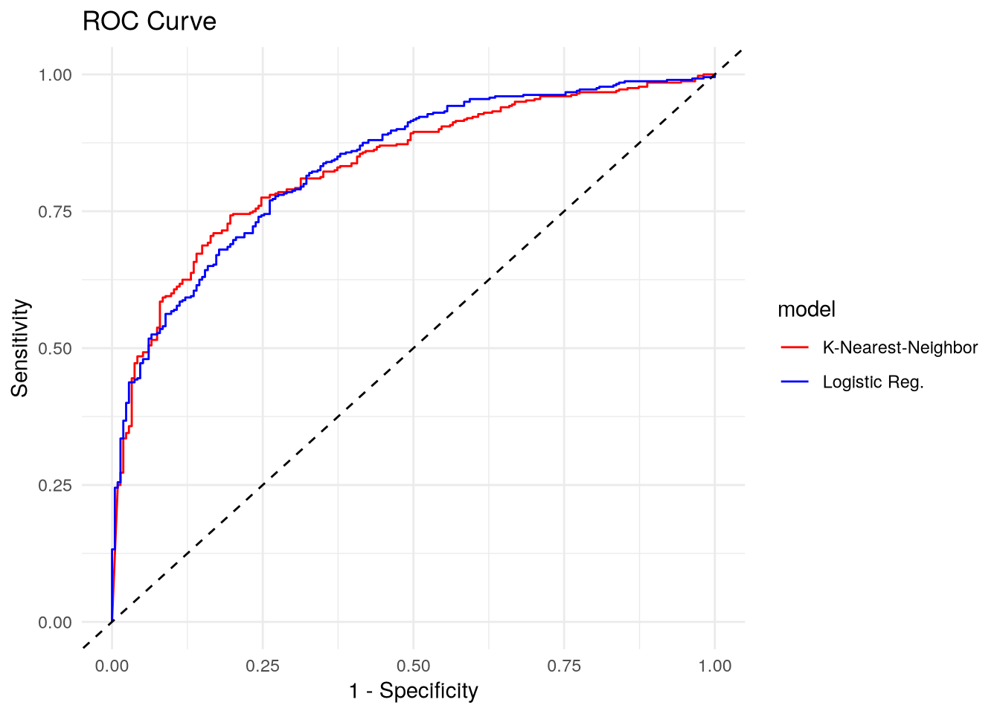

Pima Indians
Introduction
This project involves reproducible research with Docker.[1] The Pima Indians Diabetes Dataset is a well-known collection of health information frequently used by students and professionals learning data science and machine learning; you’ll often find it used in examples on websites like Kaggle.
It originally came from a major health study conducted by the National Institute of Diabetes and Digestive and Kidney Diseases (NIDDK). The data focuses specifically on women, aged 21 and older, who are of Pima heritage and lived near Phoenix, Arizona. The main goal when using this dataset is typically to predict whether a person has diabetes (a ‘yes’ or ‘no’ outcome) based on several common medical measurements recorded for each individual.
These measurements include the number of times pregnant, blood glucose levels, blood pressure, body mass index (BMI), insulin levels, age, and a diabetes pedigree function score which relates to family history. This dataset is popular for practice because it’s easily available and contains realistic challenges found in real-world data.
One particular challenge it’s famous for is the presence of zero values in columns where that’s biologically impossible, like blood pressure, skin thickness, or BMI. This requires data scientists to figure out how to handle these seemingly incorrect or missing values before building predictive models.
Workflow
The workflow proceeds according to the chart below.
Raw
File Info
| attributes | value |
|---|---|
| size | 23105 |
| isdir | FALSE |
| mode | 644 |
| mtime | 2025-05-07 18:21:59 |
| ctime | 2025-05-07 18:21:59 |
| atime | 2025-05-07 18:21:59 |
| uid | 0 |
| gid | 0 |
| uname | root |
| grname | root |
Recoded Data
One of the problems with the Pima Indians Diabetes dataset is that a number of observations are coded as zero when they should have been coded “NA”. For example, a persons blood_pressure was coded as 0 when that’s physically impossible to participate and have no blood pressure.
Summary
Normal
| vars | mean | sd | median | trimmed | mad | min | max | range | |
|---|---|---|---|---|---|---|---|---|---|
| pregnancies | 1 | 3.30 | 3.02 | 2.00 | 2.88 | 2.97 | 0.00 | 13.00 | 13.00 |
| glucose | 2 | 110.64 | 24.78 | 107.00 | 109.09 | 23.72 | 44.00 | 197.00 | 153.00 |
| blood_pressure | 3 | 70.88 | 12.16 | 70.00 | 70.71 | 11.86 | 24.00 | 122.00 | 98.00 |
| skin_thickness | 4 | 27.24 | 10.03 | 27.00 | 26.86 | 10.38 | 7.00 | 60.00 | 53.00 |
| insulin | 5 | 130.29 | 102.48 | 102.50 | 112.27 | 63.01 | 15.00 | 744.00 | 729.00 |
| bmi | 6 | 30.86 | 6.56 | 30.10 | 30.55 | 7.12 | 18.20 | 57.30 | 39.10 |
| dbf | 7 | 0.43 | 0.30 | 0.34 | 0.38 | 0.22 | 0.08 | 2.33 | 2.25 |
| age | 8 | 31.19 | 11.67 | 27.00 | 28.98 | 7.41 | 21.00 | 81.00 | 60.00 |
| outcome | 9 | 0.00 | 0.00 | 0.00 | 0.00 | 0.00 | 0.00 | 0.00 | 0.00 |
Diabetic
| vars | mean | sd | median | trimmed | mad | min | max | range | |
|---|---|---|---|---|---|---|---|---|---|
| pregnancies | 1 | 4.87 | 3.74 | 4.00 | 4.60 | 4.45 | 0.00 | 17.00 | 17.00 |
| glucose | 2 | 142.32 | 29.60 | 140.00 | 142.04 | 34.84 | 78.00 | 199.00 | 121.00 |
| blood_pressure | 3 | 75.32 | 12.30 | 74.50 | 75.22 | 11.12 | 30.00 | 114.00 | 84.00 |
| skin_thickness | 4 | 33.00 | 10.33 | 32.00 | 32.74 | 8.90 | 7.00 | 99.00 | 92.00 |
| insulin | 5 | 206.85 | 132.70 | 169.50 | 184.28 | 74.87 | 14.00 | 846.00 | 832.00 |
| bmi | 6 | 35.41 | 6.61 | 34.30 | 34.91 | 5.71 | 22.90 | 67.10 | 44.20 |
| dbf | 7 | 0.55 | 0.37 | 0.45 | 0.50 | 0.31 | 0.09 | 2.42 | 2.33 |
| age | 8 | 37.07 | 10.97 | 36.00 | 36.28 | 11.86 | 21.00 | 70.00 | 49.00 |
| outcome | 9 | 1.00 | 0.00 | 1.00 | 1.00 | 0.00 | 1.00 | 1.00 | 0.00 |
Outliers

Missing

Imputed Data
Any outliers beyond three standard deviations from the mean are set to NA. With the values that were improperly coded and the outliers set to NA, there were a total number of XXX NAs.
Summary
Normal
| vars | mean | sd | median | trimmed | mad | min | max | range | |
|---|---|---|---|---|---|---|---|---|---|
| pregnancies | 1 | 3.30 | 3.02 | 2.00 | 2.88 | 2.97 | 0.00 | 13.00 | 13.00 |
| glucose | 2 | 110.58 | 24.72 | 107.00 | 109.00 | 23.72 | 44.00 | 197.00 | 153.00 |
| blood_pressure | 3 | 70.75 | 11.42 | 70.00 | 70.58 | 11.86 | 38.00 | 108.00 | 70.00 |
| skin_thickness | 4 | 26.84 | 9.91 | 27.00 | 26.38 | 10.38 | 7.00 | 60.00 | 53.00 |
| insulin | 5 | 119.50 | 78.85 | 100.00 | 107.70 | 59.30 | 15.00 | 510.00 | 495.00 |
| bmi | 6 | 30.84 | 6.44 | 30.30 | 30.58 | 7.12 | 18.20 | 52.30 | 34.10 |
| dbf | 7 | 0.41 | 0.25 | 0.33 | 0.38 | 0.21 | 0.08 | 1.46 | 1.38 |
| age | 8 | 30.91 | 11.08 | 27.00 | 28.89 | 7.41 | 21.00 | 68.00 | 47.00 |
| outcome* | 9 | 1.00 | 0.00 | 1.00 | 1.00 | 0.00 | 1.00 | 1.00 | 0.00 |
Diabetic
| vars | mean | sd | median | trimmed | mad | min | max | range | |
|---|---|---|---|---|---|---|---|---|---|
| pregnancies | 1 | 4.73 | 3.55 | 4.00 | 4.52 | 4.45 | 0.00 | 13.00 | 13.00 |
| glucose | 2 | 142.21 | 29.60 | 140.00 | 141.92 | 34.84 | 78.00 | 199.00 | 121.00 |
| blood_pressure | 3 | 75.23 | 11.79 | 74.50 | 75.23 | 11.12 | 40.00 | 108.00 | 68.00 |
| skin_thickness | 4 | 31.62 | 8.86 | 32.00 | 31.76 | 8.90 | 7.00 | 56.00 | 49.00 |
| insulin | 5 | 197.44 | 112.11 | 173.00 | 183.91 | 86.73 | 14.00 | 510.00 | 496.00 |
| bmi | 6 | 35.12 | 6.03 | 34.20 | 34.80 | 5.63 | 22.90 | 53.20 | 30.30 |
| dbf | 7 | 0.53 | 0.31 | 0.44 | 0.49 | 0.30 | 0.09 | 1.39 | 1.31 |
| age | 8 | 36.93 | 10.78 | 36.00 | 36.19 | 11.86 | 21.00 | 67.00 | 46.00 |
| outcome* | 9 | 2.00 | 0.00 | 2.00 | 2.00 | 0.00 | 2.00 | 2.00 | 0.00 |
Outliers

Correlogram

Missing

Models
KNN
The K-Nearest Neighbors (KNN) algorithm is a foundational and intuitive method in supervised machine learning, applicable to both classification and regression problems, with roots tracing back to non-parametric statistics work by Fix and Hodges in 1951 and formal analysis by Cover and Hart in 1967. Its core theory rests on the simple idea that similar data points exist in close proximity in the feature space. KNN is considered an instance-based, or “lazy,” learning algorithm because it doesn’t build an explicit model during training; instead, it memorizes the entire labeled training dataset. When predicting an outcome for a new, unseen data point, the algorithm identifies the ‘K’ closest data points (the “nearest neighbors”) from the training set based on a chosen distance metric, typically Euclidean distance. For classification, the prediction is the most frequent class label among these K neighbors (majority vote), while for regression, the prediction is usually the average or median of the neighbors’ values. The performance of KNN hinges critically on the choice of ‘K’ (balancing bias and variance), the selection of an appropriate distance metric, and often requires feature scaling, as distance calculations are sensitive to the range and units of the input variables.
Logistic Regression
Logistic regression is a fundamental statistical method and supervised learning algorithm primarily used for binary classification problems, aiming to predict the probability of an observation belonging to one of two outcomes (e.g., yes/no, pass/fail). Developed significantly by statistician David Cox in the mid-20th century, it’s widely applied across various fields. Unlike linear regression, it models the probability (p) of the default class (typically ‘1’) using the logistic function (also known as the sigmoid function):
\[ p = \frac{1}{1 + \exp(-z)} \]
This S-shaped function takes an input z, which is a linear combination of the predictor variables , and transforms it into a probability value between 0 and 1. The linear combination input (z) actually represents the log-odds (or logit) of the event occurring. This means logistic regression models the log-odds as a linear function of the predictors:
\[ \log\left(\frac{p}{1-p}\right) = z = \beta_0 + \beta_1x_1 + \dots + \beta_nx_n \]
As a parametric model, logistic regression learns the coefficients \[(β i)\] from the training data, typically through an iterative optimization process called Maximum Likelihood Estimation (MLE). The final output probability (p) is then usually converted into a class prediction by applying a threshold (commonly 0.5).
Results
Receiver Operator Curve
The Receiver Operating Characteristic (ROC) curve is a fundamental tool in machine learning and statistics for evaluating the performance of binary classification models. Originating from signal detection theory developed during World War II to analyze radar signals, the ROC curve graphically illustrates a classifier’s diagnostic ability across all possible classification thresholds. It plots the True Positive Rate (TPR), also known as sensitivity or recall (the proportion of actual positives correctly identified), on the Y-axis against the False Positive Rate (FPR), which is equal to 1 minus specificity (the proportion of actual negatives incorrectly identified as positive), on the X-axis. Each point on the curve corresponds to a specific threshold used to convert the model’s continuous output (like a probability score) into a binary decision (0 or 1); varying this threshold traces the curve. A model with better discriminative power will have a curve that bows towards the top-left corner (representing 100% TPR and 0% FPR), while a model performing no better than random chance lies along the diagonal line (TPR = FPR). The overall performance across all thresholds is commonly summarized by the Area Under the Curve (AUC or AUROC), a value ranging from 0.5 (random chance) to 1.0 (perfect classification), representing the probability that the model ranks a randomly chosen positive instance higher than a randomly chosen negative one.

Scores
| model | .metric | .estimator | .estimate |
|---|---|---|---|
| lr | roc_auc | binary | 0.8405556 |
| knn | roc_auc | binary | 0.8370370 |
| lr | brier_class | binary | 0.1539240 |
| knn | brier_class | binary | 0.1524704 |
| knn | accuracy | binary | 0.7727273 |
| lr | accuracy | binary | 0.7402597 |
Conclusion
Report generated at 2025-05-07 18:22:58.229999
References
[1]
D. Nüst, D. Eddelbuettel, D. Bennett, R. Cannoodt, D. Clark, G. Daróczi, M. Edmondson, C. Fay, E. Hughes, L. Kjeldgaard, S. Lopp, B. Marwick, H. Nolis, J. Nolis, H. Ooi, K. Ram, N. Ross, L. Shepherd, P. Sólymos, T. L. Swetnam, N. Turaga, C. V. Petegem, J. Williams, C. Willis, and N. Xiao, “The Rockerverse: Packages and Applications for Containerisation with R,” The R Journal, vol. 12, no. 1, pp. 437–461, Sep. 2020 [Online]. Available: https://rjournal.github.io/. [Accessed: 29-Apr-2025]